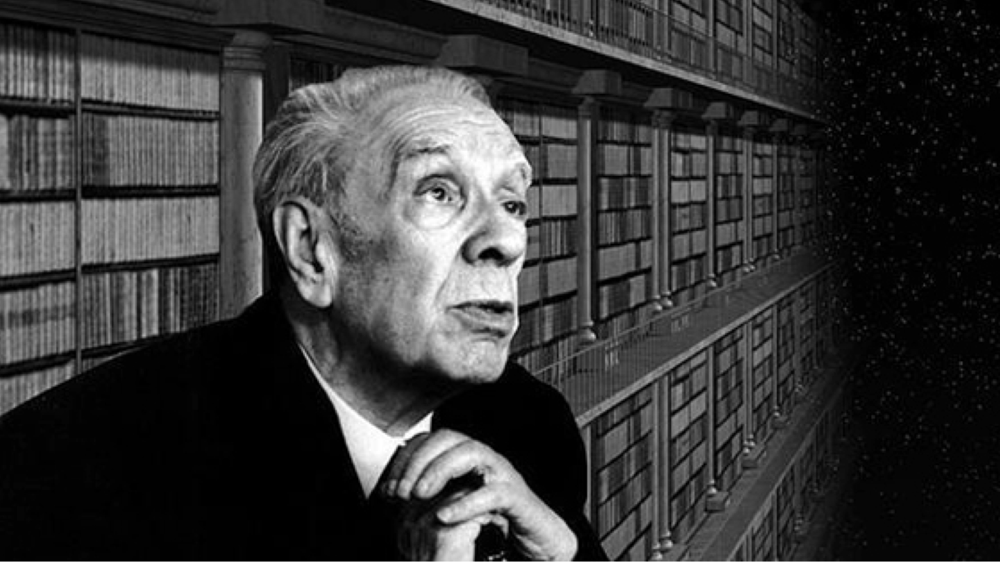
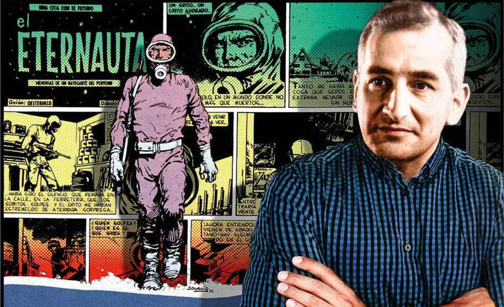
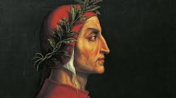

Nuestros artículos
Sobre Borges y sus Laberintos
La escritura de Jorge Luis Borges es una amalgama única de erudición, imaginación y estilo conciso. Sus obras están impregnadas de laberintos metafísicos, paradojas temporales y reflexiones sobre la naturaleza de la realidad. Borges emplea una prosa precisa y compacta que es simultáneamente accesible y profunda, convirtiéndolo en uno de los escritores más influyentes del siglo XX. Uno de los aspectos más distintivos de la escritura de Borges es su uso magistral de la intertextualidad y las referencias literarias. Sus relatos a menudo se entrelazan con elementos de la mitología, la filosofía, la historia y la literatura clásica y moderna. Esta intertextualidad crea capas de significado y complejidad, desafiando al lector a explorar conexiones entre diferentes disciplinas y obras..
Leer Completo¿Todos los fuegos el fuego? Un Análisis acerca de Cortázar

Julio Cortázar, maestro del realismo mágico y la experimentación literaria, revolucionó la narrativa del siglo XX con su estilo innovador y su enfoque único. Su escritura se caracteriza por la ruptura de las estructuras convencionales, desafiando las normas narrativas y explorando la realidad desde ángulos inesperados. La habilidad de Cortázar para entrelazar lo cotidiano con lo surrealista es notable en obras como "Rayuela". Emplea la técnica del collage narrativo, permitiendo al lector participar activamente en la construcción del relato. Sus cuentos breves, como "Bestiario" o "Final del juego", capturan momentos inusuales y desconcertantes, desafiando la lógica y la linealidad.
Leer CompletoNo solo un Eternauta: Héctor Oesterheld, una figura mítica
Héctor Germán Oesterheld, icónico guionista argentino, trascendió el cómic con su narrativa revolucionaria. Reconocido por obras como "El Eternauta", fusionó lo político y lo social en relatos de ciencia ficción. Su valentía al enfrentar regímenes autoritarios le llevó al exilio y a su desaparición en la dictadura argentina. Oesterheld sigue siendo un referente por su compromiso con la justicia social y su influencia duradera en la historieta, destacando por su visión crítica y su capacidad para entrelazar lo humano con lo fantástico en su escritura.
Leer CompletoDante Alighieri: ¿Quién era?
Dante Alighieri, cumbre de la literatura italiana, trascendió su época con "La Divina Comedia". Esta obra maestra es un viaje épico a través del Infierno, el Purgatorio y el Paraíso, donde Dante explora la naturaleza humana, la redención y la justicia divina. Su estilo poético magistral y la complejidad simbólica han influido profundamente en la literatura occidental. Dante fusiona sabiduría clásica y teología cristiana, personificando a figuras históricas y mitológicas para representar aspectos morales y filosóficos. A través de su viaje, expone la relación entre el pecado humano y la redención, mostrando la búsqueda eterna del hombre por la verdad y la salvación. La Divina Comedia no solo es una obra literaria extraordinaria, sino también un compendio de la visión medieval del mundo, manteniendo su relevancia e impacto hasta la actualidad.
Leer Completo